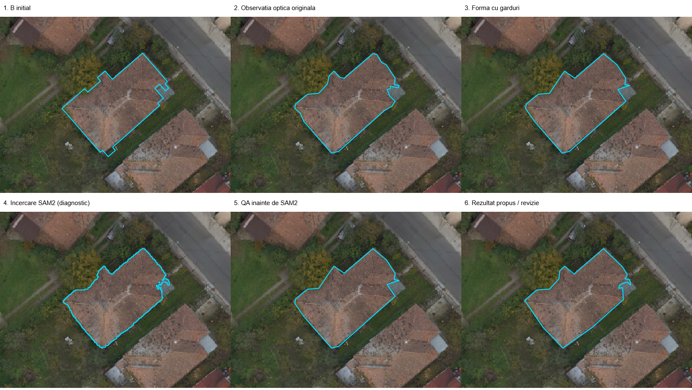
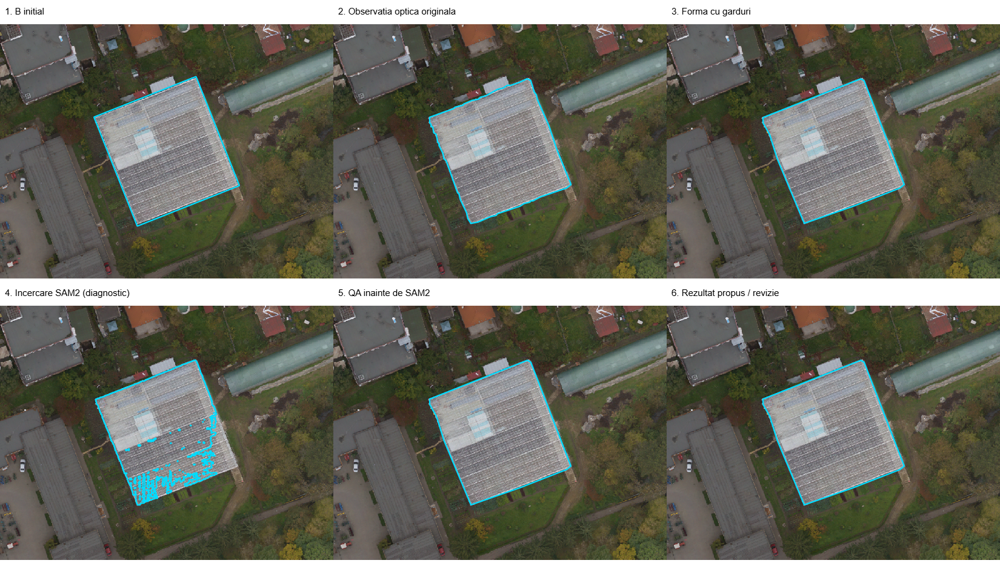
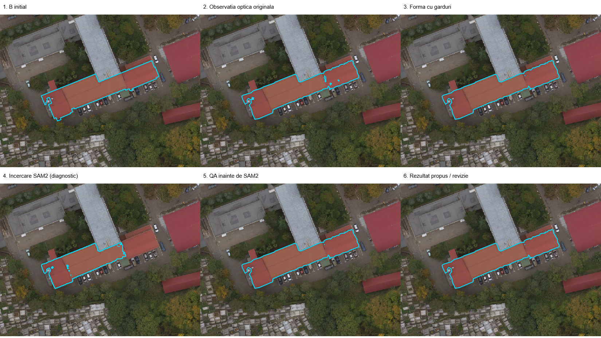
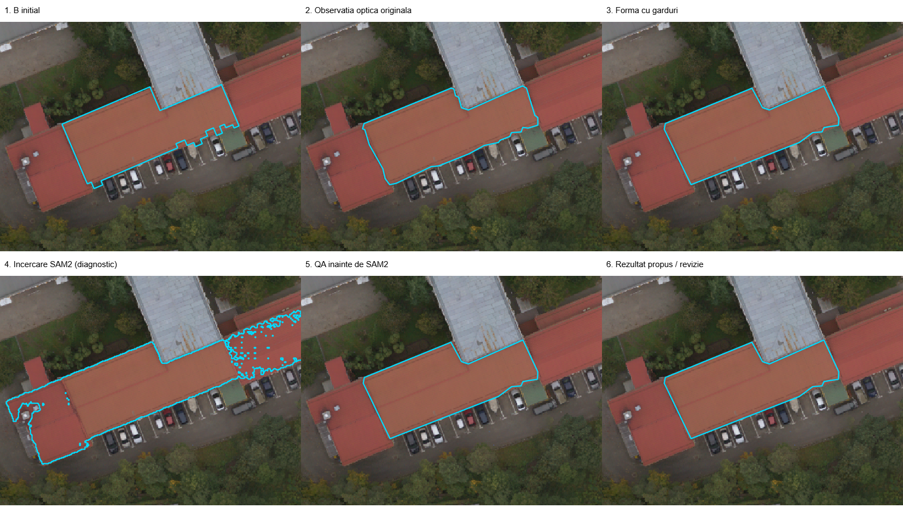
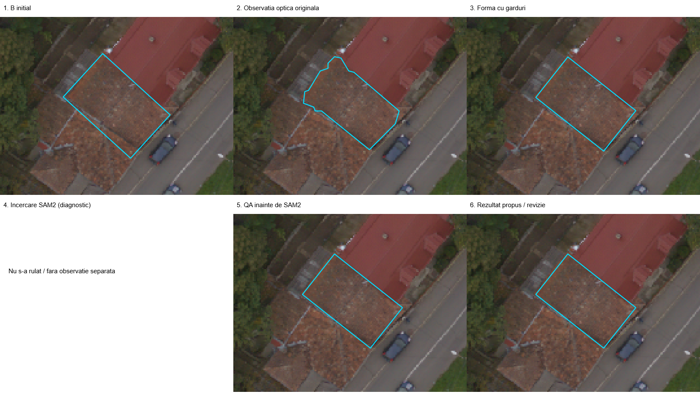
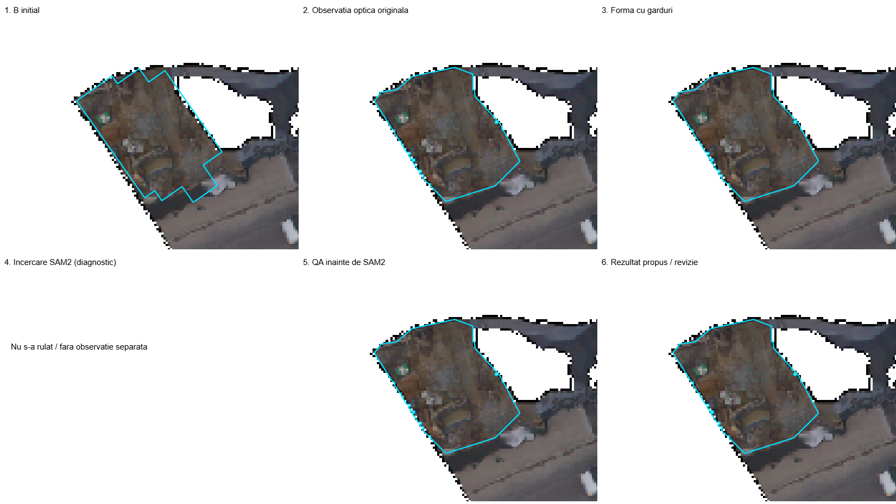

2026-10-18 · comparații randate în QGIS · toate rezultatele rămân ipoteze
81 propuneri trec porțile automate de formă; 135 necesită revizie. Aceste numere nu înseamnă clădiri corecte sau acceptate. Nu există acuratețe ori recall măsurate independent.
216 intrări · 216 propuneri păstrate · 71 respinși anterior păstrați în coada de verificare
Conflictele nu au fost ascunse prin decuparea sau unirea forțată a poligoanelor. Unele se reduc prin revenirea la observația optică originală. Cele rămase sunt explicit în revizie.
Au fost găsite 28 intersecții cu alte loturi, pentru 25 propuneri B. Pot fi observații repetate sau corpuri învecinate; nu sunt șterse automat.
Cyan în planșe arată conturul etapei. În proiectul QGIS: cyan = ipoteză simplă, portocaliu = revizie. Culoarea nu înseamnă acceptare.






Fiecare identificator deschide imaginea înainte/după, în aceeași fereastră geografică. Numărul de noduri este observație → propunere, nu B inițial → propunere.
| Obiect / imagine | Stare | Noduri | Motive / limitări |
|---|---|---|---|
| OPT_B_001:C1 | NEEDS_REVIEW | 34 → 10 | OVERLAPPING_IDENTITY_UNRESOLVED; INTERSECTS_EXISTING_OTHER_LOT; ALREADY_OBSERVED_OTHER_LOT |
| OPT_B_002:C1 | NEEDS_REVIEW | 23 → 11 | ALREADY_OBSERVED_OTHER_LOT |
| OPT_B_003:C1 | SIMPLE_ROOF_HYPOTHESIS | 18 → 11 | Ipoteza simpla; necesita acceptare vizuala |
| OPT_B_004:C1 | SIMPLE_ROOF_HYPOTHESIS | 24 → 7 | Ipoteza simpla; necesita acceptare vizuala |
| OPT_B_005:C1 | SIMPLE_ROOF_HYPOTHESIS | 12 → 9 | Ipoteza simpla; necesita acceptare vizuala |
| OPT_B_006:C1 | NEEDS_REVIEW | 51 → 10 | ALREADY_OBSERVED_OTHER_LOT |
| OPT_B_007:C1 | SIMPLE_ROOF_HYPOTHESIS | 19 → 16 | Ipoteza simpla; necesita acceptare vizuala |
| OPT_B_008:C1 | NEEDS_REVIEW | 13 → 4 | OVERLAPPING_IDENTITY_UNRESOLVED; ALREADY_OBSERVED_OTHER_LOT |
| OPT_B_009:C1 | SIMPLE_ROOF_HYPOTHESIS | 27 → 17 | Ipoteza simpla; necesita acceptare vizuala |
| OPT_B_010:C1 | NEEDS_REVIEW | 24 → 6 | SMALL_MASK_HOLES_FILLED_REVIEW_REQUIRED |
| OPT_B_011:C1 | SIMPLE_ROOF_HYPOTHESIS | 37 → 13 | Ipoteza simpla; necesita acceptare vizuala |
| OPT_B_012:C1 | NEEDS_REVIEW | 21 → 4 | OVERLAPPING_IDENTITY_UNRESOLVED |
| OPT_B_013:C1 | SIMPLE_ROOF_HYPOTHESIS | 19 → 10 | Ipoteza simpla; necesita acceptare vizuala |
| OPT_B_014:C1 | SIMPLE_ROOF_HYPOTHESIS | 10 → 8 | Ipoteza simpla; necesita acceptare vizuala |
| OPT_B_015:C1 | NEEDS_REVIEW | 16 → 10 | ALREADY_OBSERVED_OTHER_LOT |
| OPT_B_016:C1 | NEEDS_REVIEW | 15 → 15 | OVERLAPPING_IDENTITY_UNRESOLVED |
| OPT_B_017:C1 | NEEDS_REVIEW | 20 → 6 | OVERLAPPING_IDENTITY_UNRESOLVED; INTERSECTS_EXISTING_OTHER_LOT |
| OPT_B_018:C1 | SIMPLE_ROOF_HYPOTHESIS | 17 → 14 | Ipoteza simpla; necesita acceptare vizuala |
| OPT_B_019:C1 | NEEDS_REVIEW | 12 → 4 | ALREADY_OBSERVED_OTHER_LOT |
| OPT_B_020:C1 | NEEDS_REVIEW | 48 → 24 | ALREADY_OBSERVED_OTHER_LOT |
| OPT_B_021:C1 | NEEDS_REVIEW | 48 → 48 | INCOMPLETE_OPTICAL_COVERAGE; COMPLEX_BOUNDARY_REVIEW; OVERLAPPING_IDENTITY_UNRESOLVED |
| OPT_B_022:C1 | SIMPLE_ROOF_HYPOTHESIS | 13 → 12 | Ipoteza simpla; necesita acceptare vizuala |
| OPT_B_023:C1 | SIMPLE_ROOF_HYPOTHESIS | 19 → 12 | Ipoteza simpla; necesita acceptare vizuala |
| OPT_B_024:C1 | NEEDS_REVIEW | 27 → 11 | OVERLAPPING_IDENTITY_UNRESOLVED |
| OPT_B_025:C1 | NEEDS_REVIEW | 4 → 4 | OVERLAPPING_IDENTITY_UNRESOLVED |
| OPT_B_026:C1 | NEEDS_REVIEW | 4 → 4 | OVERLAPPING_IDENTITY_UNRESOLVED |
| OPT_B_027:C1 | SIMPLE_ROOF_HYPOTHESIS | 14 → 9 | Ipoteza simpla; necesita acceptare vizuala |
| OPT_B_028:C1 | SIMPLE_ROOF_HYPOTHESIS | 27 → 14 | Ipoteza simpla; necesita acceptare vizuala |
| OPT_B_029:C1 | NEEDS_REVIEW | 17 → 4 | INTERSECTS_EXISTING_OTHER_LOT |
| OPT_B_030:C1 | SIMPLE_ROOF_HYPOTHESIS | 13 → 4 | Ipoteza simpla; necesita acceptare vizuala |
| OPT_B_031:C1 | SIMPLE_ROOF_HYPOTHESIS | 20 → 5 | Ipoteza simpla; necesita acceptare vizuala |
| OPT_B_032:C1 | SIMPLE_ROOF_HYPOTHESIS | 6 → 4 | Ipoteza simpla; necesita acceptare vizuala |
| OPT_B_033:C1 | NEEDS_REVIEW | 14 → 9 | OVERLAPPING_IDENTITY_UNRESOLVED |
| OPT_B_034:C1 | NEEDS_REVIEW | 17 → 4 | OVERLAPPING_IDENTITY_UNRESOLVED; INTERSECTS_EXISTING_OTHER_LOT |
| OPT_B_035:C1 | SIMPLE_ROOF_HYPOTHESIS | 12 → 10 | Ipoteza simpla; necesita acceptare vizuala |
| OPT_B_036:C1 | SIMPLE_ROOF_HYPOTHESIS | 13 → 13 | Ipoteza simpla; necesita acceptare vizuala |
| OPT_B_037:C1 | NEEDS_REVIEW | 29 → 11 | SMALL_MASK_HOLES_FILLED_REVIEW_REQUIRED |
| OPT_B_038:C1 | SIMPLE_ROOF_HYPOTHESIS | 20 → 12 | Ipoteza simpla; necesita acceptare vizuala |
| OPT_B_039:C1 | NEEDS_REVIEW | 30 → 22 | SMALL_MASK_HOLES_FILLED_REVIEW_REQUIRED; OVERLAPPING_IDENTITY_UNRESOLVED |
| OPT_B_040:C1 | NEEDS_REVIEW | 17 → 14 | OVERLAPPING_IDENTITY_UNRESOLVED |
| OPT_B_041:C1 | NEEDS_REVIEW | 13 → 9 | OVERLAPPING_IDENTITY_UNRESOLVED; INTERSECTS_EXISTING_OTHER_LOT |
| OPT_B_042:C1 | NEEDS_REVIEW | 25 → 12 | SMALL_MASK_HOLES_FILLED_REVIEW_REQUIRED |
| OPT_B_043:C1 | NEEDS_REVIEW | 108 → 89 | INTERIOR_RINGS; SMALL_MASK_HOLES_FILLED_REVIEW_REQUIRED; COMPLEX_BOUNDARY_REVIEW |
| OPT_B_044:C1 | NEEDS_REVIEW | 11 → 4 | INTERSECTS_EXISTING_OTHER_LOT |
| OPT_B_045:C1 | SIMPLE_ROOF_HYPOTHESIS | 4 → 4 | Ipoteza simpla; necesita acceptare vizuala |
| OPT_B_046:C1 | NEEDS_REVIEW | 458 → 21 | SMALL_MASK_HOLES_FILLED_REVIEW_REQUIRED |
| OPT_B_047:C1 | NEEDS_REVIEW | 53 → 23 | OVERLAPPING_IDENTITY_UNRESOLVED |
| OPT_B_048:C1 | NEEDS_REVIEW | 14 → 4 | OVERLAPPING_IDENTITY_UNRESOLVED |
| OPT_B_049:C1 | NEEDS_REVIEW | 28 → 6 | ALREADY_OBSERVED_OTHER_LOT |
| OPT_B_050:C1 | NEEDS_REVIEW | 11 → 10 | OVERLAPPING_IDENTITY_UNRESOLVED |
| OPT_B_051:C1 | SIMPLE_ROOF_HYPOTHESIS | 4 → 4 | Ipoteza simpla; necesita acceptare vizuala |
| OPT_B_052:C1 | SIMPLE_ROOF_HYPOTHESIS | 4 → 4 | Ipoteza simpla; necesita acceptare vizuala |
| OPT_B_053:C1 | SIMPLE_ROOF_HYPOTHESIS | 6 → 4 | Ipoteza simpla; necesita acceptare vizuala |
| OPT_B_054:C1 | NEEDS_REVIEW | 22 → 19 | OVERLAPPING_IDENTITY_UNRESOLVED |
| OPT_B_055:C1 | SIMPLE_ROOF_HYPOTHESIS | 23 → 6 | Ipoteza simpla; necesita acceptare vizuala |
| OPT_B_056:C1 | SIMPLE_ROOF_HYPOTHESIS | 7 → 4 | Ipoteza simpla; necesita acceptare vizuala |
| OPT_B_057:C1 | SIMPLE_ROOF_HYPOTHESIS | 8 → 4 | Ipoteza simpla; necesita acceptare vizuala |
| OPT_B_058:C1 | NEEDS_REVIEW | 23 → 9 | SMALL_MASK_HOLES_FILLED_REVIEW_REQUIRED; OVERLAPPING_IDENTITY_UNRESOLVED |
| OPT_B_059:C1 | SIMPLE_ROOF_HYPOTHESIS | 12 → 4 | Ipoteza simpla; necesita acceptare vizuala |
| OPT_B_060:C1 | SIMPLE_ROOF_HYPOTHESIS | 22 → 13 | Ipoteza simpla; necesita acceptare vizuala |
| OPT_B_061:C1 | NEEDS_REVIEW | 14 → 4 | OVERLAPPING_IDENTITY_UNRESOLVED; INTERSECTS_EXISTING_OTHER_LOT |
| OPT_B_062:C1 | NEEDS_REVIEW | 11 → 8 | OVERLAPPING_IDENTITY_UNRESOLVED |
| OPT_B_063:C1 | NEEDS_REVIEW | 6 → 6 | OVERLAPPING_IDENTITY_UNRESOLVED |
| OPT_B_064:C1 | SIMPLE_ROOF_HYPOTHESIS | 20 → 4 | Ipoteza simpla; necesita acceptare vizuala |
| OPT_B_065:C1 | SIMPLE_ROOF_HYPOTHESIS | 14 → 8 | Ipoteza simpla; necesita acceptare vizuala |
| OPT_B_066:C1 | SIMPLE_ROOF_HYPOTHESIS | 23 → 12 | Ipoteza simpla; necesita acceptare vizuala |
| OPT_B_067:C1 | NEEDS_REVIEW | 7 → 4 | OVERLAPPING_IDENTITY_UNRESOLVED |
| OPT_B_068:C1 | NEEDS_REVIEW | 25 → 12 | SMALL_MASK_HOLES_FILLED_REVIEW_REQUIRED; OVERLAPPING_IDENTITY_UNRESOLVED |
| OPT_B_069:C1 | SIMPLE_ROOF_HYPOTHESIS | 23 → 12 | Ipoteza simpla; necesita acceptare vizuala |
| OPT_B_070:C1 | SIMPLE_ROOF_HYPOTHESIS | 24 → 23 | Ipoteza simpla; necesita acceptare vizuala |
| OPT_B_071:C1 | SIMPLE_ROOF_HYPOTHESIS | 13 → 11 | Ipoteza simpla; necesita acceptare vizuala |
| OPT_B_072:C1 | NEEDS_REVIEW | 15 → 9 | OVERLAPPING_IDENTITY_UNRESOLVED; INTERSECTS_EXISTING_OTHER_LOT |
| OPT_B_073:C1 | NEEDS_REVIEW | 12 → 10 | OVERLAPPING_IDENTITY_UNRESOLVED |
| OPT_B_074:C1 | SIMPLE_ROOF_HYPOTHESIS | 10 → 4 | Ipoteza simpla; necesita acceptare vizuala |
| OPT_B_075:C1 | SIMPLE_ROOF_HYPOTHESIS | 20 → 14 | Ipoteza simpla; necesita acceptare vizuala |
| OPT_B_076:C1 | NEEDS_REVIEW | 13 → 13 | OVERLAPPING_IDENTITY_UNRESOLVED |
| OPT_B_077:C1 | NEEDS_REVIEW | 17 → 12 | OVERLAPPING_IDENTITY_UNRESOLVED |
| OPT_B_078:C1 | NEEDS_REVIEW | 12 → 6 | OVERLAPPING_IDENTITY_UNRESOLVED |
| OPT_B_079:C1 | NEEDS_REVIEW | 22 → 12 | OVERLAPPING_IDENTITY_UNRESOLVED |
| OPT_B_080:C1 | NEEDS_REVIEW | 4 → 4 | OVERLAPPING_IDENTITY_UNRESOLVED |
| OPT_B_081:C1 | SIMPLE_ROOF_HYPOTHESIS | 23 → 9 | Ipoteza simpla; necesita acceptare vizuala |
| OPT_B_082:C1 | NEEDS_REVIEW | 29 → 4 | SMALL_MASK_HOLES_FILLED_REVIEW_REQUIRED |
| OPT_B_083:C1 | NEEDS_REVIEW | 20 → 20 | FIT_CROSSES_NODATA |
| OPT_B_084:C1 | SIMPLE_ROOF_HYPOTHESIS | 10 → 10 | Ipoteza simpla; necesita acceptare vizuala |
| OPT_B_085:C1 | NEEDS_REVIEW | 5 → 4 | OVERLAPPING_IDENTITY_UNRESOLVED |
| OPT_B_086:C1 | SIMPLE_ROOF_HYPOTHESIS | 22 → 13 | Ipoteza simpla; necesita acceptare vizuala |
| OPT_B_087:C1 | NEEDS_REVIEW | 11 → 10 | OVERLAPPING_IDENTITY_UNRESOLVED |
| OPT_B_088:C1 | SIMPLE_ROOF_HYPOTHESIS | 15 → 9 | Ipoteza simpla; necesita acceptare vizuala |
| OPT_B_089:C1 | NEEDS_REVIEW | 49 → 23 | SMALL_MASK_HOLES_FILLED_REVIEW_REQUIRED; OVERLAPPING_IDENTITY_UNRESOLVED |
| OPT_B_090:C1 | NEEDS_REVIEW | 42 → 42 | NO_SUPPORTED_SIMPLE_FIT; COMPLEX_BOUNDARY_REVIEW |
| OPT_B_091:C1 | NEEDS_REVIEW | 8 → 4 | OVERLAPPING_IDENTITY_UNRESOLVED |
| OPT_B_092:C1 | SIMPLE_ROOF_HYPOTHESIS | 12 → 12 | Ipoteza simpla; necesita acceptare vizuala |
| OPT_B_093:C1 | NEEDS_REVIEW | 20 → 20 | FIT_CROSSES_NODATA; OVERLAPPING_IDENTITY_UNRESOLVED |
| OPT_B_094:C1 | NEEDS_REVIEW | 16 → 8 | OVERLAPPING_IDENTITY_UNRESOLVED |
| OPT_B_095:C1 | NEEDS_REVIEW | 24 → 24 | INCOMPLETE_OPTICAL_COVERAGE |
| OPT_B_096:C1 | SIMPLE_ROOF_HYPOTHESIS | 18 → 8 | Ipoteza simpla; necesita acceptare vizuala |
| OPT_B_097:C1 | SIMPLE_ROOF_HYPOTHESIS | 9 → 6 | Ipoteza simpla; necesita acceptare vizuala |
| OPT_B_098:C1 | NEEDS_REVIEW | 18 → 13 | OVERLAPPING_IDENTITY_UNRESOLVED |
| OPT_B_099:C1 | NEEDS_REVIEW | 24 → 8 | OVERLAPPING_IDENTITY_UNRESOLVED |
| OPT_B_100:C1 | NEEDS_REVIEW | 74 → 24 | ALREADY_OBSERVED_OTHER_LOT |
| OPT_B_101:C1 | NEEDS_REVIEW | 19 → 12 | OVERLAPPING_IDENTITY_UNRESOLVED |
| OPT_B_102:C1 | SIMPLE_ROOF_HYPOTHESIS | 9 → 4 | Ipoteza simpla; necesita acceptare vizuala |
| OPT_B_103:C1 | SIMPLE_ROOF_HYPOTHESIS | 21 → 16 | Ipoteza simpla; necesita acceptare vizuala |
| OPT_B_104:C1 | SIMPLE_ROOF_HYPOTHESIS | 17 → 14 | Ipoteza simpla; necesita acceptare vizuala |
| OPT_B_105:C1 | NEEDS_REVIEW | 8 → 4 | OVERLAPPING_IDENTITY_UNRESOLVED; INTERSECTS_EXISTING_OTHER_LOT |
| OPT_B_106:C1 | NEEDS_REVIEW | 15 → 8 | ALREADY_OBSERVED_OTHER_LOT |
| OPT_B_107:C1 | NEEDS_REVIEW | 92 → 92 | INCOMPLETE_OPTICAL_COVERAGE; COMPLEX_BOUNDARY_REVIEW; OVERLAPPING_IDENTITY_UNRESOLVED |
| OPT_B_108:C1 | SIMPLE_ROOF_HYPOTHESIS | 21 → 12 | Ipoteza simpla; necesita acceptare vizuala |
| OPT_B_109:C1 | SIMPLE_ROOF_HYPOTHESIS | 20 → 14 | Ipoteza simpla; necesita acceptare vizuala |
| OPT_B_110:C1 | NEEDS_REVIEW | 25 → 12 | OVERLAPPING_IDENTITY_UNRESOLVED |
| OPT_B_111:C1 | NEEDS_REVIEW | 16 → 4 | OVERLAPPING_IDENTITY_UNRESOLVED |
| OPT_B_112:C1 | NEEDS_REVIEW | 17 → 13 | OVERLAPPING_IDENTITY_UNRESOLVED |
| OPT_B_113:C1 | SIMPLE_ROOF_HYPOTHESIS | 4 → 4 | Ipoteza simpla; necesita acceptare vizuala |
| OPT_B_114:C1 | NEEDS_REVIEW | 49 → 19 | OVERLAPPING_IDENTITY_UNRESOLVED |
| OPT_B_115:C1 | NEEDS_REVIEW | 12 → 6 | OVERLAPPING_IDENTITY_UNRESOLVED |
| OPT_B_116:C1 | SIMPLE_ROOF_HYPOTHESIS | 23 → 17 | Ipoteza simpla; necesita acceptare vizuala |
| OPT_B_117:C1 | SIMPLE_ROOF_HYPOTHESIS | 23 → 12 | Ipoteza simpla; necesita acceptare vizuala |
| OPT_B_118:C1 | SIMPLE_ROOF_HYPOTHESIS | 12 → 9 | Ipoteza simpla; necesita acceptare vizuala |
| OPT_B_119:C1 | SIMPLE_ROOF_HYPOTHESIS | 19 → 7 | Ipoteza simpla; necesita acceptare vizuala |
| OPT_B_120:C1 | NEEDS_REVIEW | 16 → 4 | OVERLAPPING_IDENTITY_UNRESOLVED |
| OPT_B_121:C1 | SIMPLE_ROOF_HYPOTHESIS | 21 → 17 | Ipoteza simpla; necesita acceptare vizuala |
| OPT_B_122:C1 | SIMPLE_ROOF_HYPOTHESIS | 24 → 4 | Ipoteza simpla; necesita acceptare vizuala |
| OPT_B_123:C1 | NEEDS_REVIEW | 18 → 15 | OVERLAPPING_IDENTITY_UNRESOLVED |
| OPT_B_124:C1 | SIMPLE_ROOF_HYPOTHESIS | 14 → 14 | Ipoteza simpla; necesita acceptare vizuala |
| OPT_B_125:C1 | SIMPLE_ROOF_HYPOTHESIS | 24 → 16 | Ipoteza simpla; necesita acceptare vizuala |
| OPT_B_126:C1 | NEEDS_REVIEW | 76 → 68 | INTERIOR_RINGS; SMALL_MASK_HOLES_FILLED_REVIEW_REQUIRED; COMPLEX_BOUNDARY_REVIEW; OVERLAPPING_IDENTITY_UNRESOLVED |
| OPT_B_127:C1 | SIMPLE_ROOF_HYPOTHESIS | 13 → 13 | Ipoteza simpla; necesita acceptare vizuala |
| OPT_B_128:C1 | NEEDS_REVIEW | 9 → 4 | OVERLAPPING_IDENTITY_UNRESOLVED |
| OPT_B_129:C1 | NEEDS_REVIEW | 15 → 6 | INTERSECTS_EXISTING_OTHER_LOT |
| OPT_B_130:C1 | NEEDS_REVIEW | 10 → 4 | OVERLAPPING_IDENTITY_UNRESOLVED |
| OPT_B_131:C1 | NEEDS_REVIEW | 9 → 4 | OVERLAPPING_IDENTITY_UNRESOLVED |
| OPT_B_132:C1 | NEEDS_REVIEW | 16 → 7 | OVERLAPPING_IDENTITY_UNRESOLVED |
| OPT_B_133:C1 | SIMPLE_ROOF_HYPOTHESIS | 15 → 11 | Ipoteza simpla; necesita acceptare vizuala |
| OPT_B_134:C1 | NEEDS_REVIEW | 11 → 4 | OVERLAPPING_IDENTITY_UNRESOLVED |
| OPT_B_135:C1 | SIMPLE_ROOF_HYPOTHESIS | 14 → 9 | Ipoteza simpla; necesita acceptare vizuala |
| OPT_B_136:C1 | SIMPLE_ROOF_HYPOTHESIS | 27 → 4 | Ipoteza simpla; necesita acceptare vizuala |
| OPT_B_137:C1 | NEEDS_REVIEW | 19 → 7 | OVERLAPPING_IDENTITY_UNRESOLVED |
| OPT_B_138:C1 | SIMPLE_ROOF_HYPOTHESIS | 11 → 10 | Ipoteza simpla; necesita acceptare vizuala |
| OPT_B_139:C1 | NEEDS_REVIEW | 15 → 4 | OVERLAPPING_IDENTITY_UNRESOLVED |
| OPT_B_140:C1 | NEEDS_REVIEW | 20 → 12 | OVERLAPPING_IDENTITY_UNRESOLVED |
| OPT_B_141:C1 | NEEDS_REVIEW | 20 → 10 | SMALL_MASK_HOLES_FILLED_REVIEW_REQUIRED |
| OPT_B_142:C1 | SIMPLE_ROOF_HYPOTHESIS | 13 → 12 | Ipoteza simpla; necesita acceptare vizuala |
| OPT_B_143:C1 | NEEDS_REVIEW | 16 → 4 | OVERLAPPING_IDENTITY_UNRESOLVED |
| OPT_B_144:C1 | SIMPLE_ROOF_HYPOTHESIS | 29 → 15 | Ipoteza simpla; necesita acceptare vizuala |
| OPT_B_145:C1 | NEEDS_REVIEW | 26 → 22 | ALREADY_OBSERVED_OTHER_LOT |
| OPT_B_146:C1 | SIMPLE_ROOF_HYPOTHESIS | 11 → 11 | Ipoteza simpla; necesita acceptare vizuala |
| OPT_B_147:C1 | NEEDS_REVIEW | 50 → 19 | SMALL_MASK_HOLES_FILLED_REVIEW_REQUIRED; OVERLAPPING_IDENTITY_UNRESOLVED |
| OPT_B_148:C1 | NEEDS_REVIEW | 10 → 4 | OVERLAPPING_IDENTITY_UNRESOLVED |
| OPT_B_149:C1 | SIMPLE_ROOF_HYPOTHESIS | 13 → 11 | Ipoteza simpla; necesita acceptare vizuala |
| OPT_B_150:C1 | NEEDS_REVIEW | 19 → 14 | OVERLAPPING_IDENTITY_UNRESOLVED |
| OPT_B_151:C1 | NEEDS_REVIEW | 77 → 77 | INTERIOR_RINGS; COMPLEX_BOUNDARY_REVIEW; OVERLAPPING_IDENTITY_UNRESOLVED |
| OPT_B_152:C1 | NEEDS_REVIEW | 74 → 74 | NO_SUPPORTED_SIMPLE_FIT; COMPLEX_BOUNDARY_REVIEW |
| OPT_B_153:C1 | NEEDS_REVIEW | 42 → 42 | INTERIOR_RINGS; COMPLEX_BOUNDARY_REVIEW; OVERLAPPING_IDENTITY_UNRESOLVED |
| OPT_B_154:C1 | NEEDS_REVIEW | 92 → 74 | INTERIOR_RINGS; SMALL_MASK_HOLES_FILLED_REVIEW_REQUIRED; COMPLEX_BOUNDARY_REVIEW; OVERLAPPING_IDENTITY_UNRESOLVED; INTERSECTS_EXISTING_OTHER_LOT |
| OPT_B_155:C1 | SIMPLE_ROOF_HYPOTHESIS | 11 → 8 | Ipoteza simpla; necesita acceptare vizuala |
| OPT_B_156:C1 | NEEDS_REVIEW | 11 → 9 | OVERLAPPING_IDENTITY_UNRESOLVED |
| OPT_B_157:C1 | NEEDS_REVIEW | 45 → 45 | INCOMPLETE_OPTICAL_COVERAGE; COMPLEX_BOUNDARY_REVIEW |
| OPT_B_158:C1 | NEEDS_REVIEW | 22 → 22 | INCOMPLETE_OPTICAL_COVERAGE; OVERLAPPING_IDENTITY_UNRESOLVED |
| OPT_B_159:C1 | NEEDS_REVIEW | 30 → 12 | OVERLAPPING_IDENTITY_UNRESOLVED; INTERSECTS_EXISTING_OTHER_LOT |
| OPT_B_160:C1 | SIMPLE_ROOF_HYPOTHESIS | 15 → 9 | Ipoteza simpla; necesita acceptare vizuala |
| OPT_B_161:C1 | SIMPLE_ROOF_HYPOTHESIS | 20 → 14 | Ipoteza simpla; necesita acceptare vizuala |
| OPT_B_162:C1 | NEEDS_REVIEW | 29 → 12 | SMALL_MASK_HOLES_FILLED_REVIEW_REQUIRED |
| OPT_B_163:C1 | SIMPLE_ROOF_HYPOTHESIS | 29 → 24 | Ipoteza simpla; necesita acceptare vizuala |
| OPT_B_164:C1 | NEEDS_REVIEW | 44 → 19 | SMALL_MASK_HOLES_FILLED_REVIEW_REQUIRED; OVERLAPPING_IDENTITY_UNRESOLVED |
| OPT_B_165:C1 | SIMPLE_ROOF_HYPOTHESIS | 8 → 4 | Ipoteza simpla; necesita acceptare vizuala |
| OPT_B_166:C1 | SIMPLE_ROOF_HYPOTHESIS | 16 → 11 | Ipoteza simpla; necesita acceptare vizuala |
| OPT_B_167:C1 | NEEDS_REVIEW | 26 → 13 | OVERLAPPING_IDENTITY_UNRESOLVED |
| OPT_B_168:C1 | NEEDS_REVIEW | 27 → 12 | OVERLAPPING_IDENTITY_UNRESOLVED |
| OPT_B_169:C1 | NEEDS_REVIEW | 30 → 13 | OVERLAPPING_IDENTITY_UNRESOLVED; INTERSECTS_EXISTING_OTHER_LOT |
| OPT_B_170:C1 | NEEDS_REVIEW | 16 → 10 | OVERLAPPING_IDENTITY_UNRESOLVED |
| OPT_B_171:C1 | SIMPLE_ROOF_HYPOTHESIS | 16 → 13 | Ipoteza simpla; necesita acceptare vizuala |
| OPT_B_172:C1 | SIMPLE_ROOF_HYPOTHESIS | 30 → 13 | Ipoteza simpla; necesita acceptare vizuala |
| OPT_B_173:C1 | NEEDS_REVIEW | 16 → 10 | OVERLAPPING_IDENTITY_UNRESOLVED |
| OPT_B_174:C1 | NEEDS_REVIEW | 34 → 12 | OVERLAPPING_IDENTITY_UNRESOLVED |
| OPT_B_175:C1 | SIMPLE_ROOF_HYPOTHESIS | 11 → 4 | Ipoteza simpla; necesita acceptare vizuala |
| OPT_B_176:C1 | SIMPLE_ROOF_HYPOTHESIS | 12 → 11 | Ipoteza simpla; necesita acceptare vizuala |
| OPT_B_177:C1 | SIMPLE_ROOF_HYPOTHESIS | 4 → 4 | Ipoteza simpla; necesita acceptare vizuala |
| OPT_B_178:C1 | SIMPLE_ROOF_HYPOTHESIS | 15 → 15 | Ipoteza simpla; necesita acceptare vizuala |
| OPT_B_179:C1 | NEEDS_REVIEW | 81 → 81 | INCOMPLETE_OPTICAL_COVERAGE; COMPLEX_BOUNDARY_REVIEW; OVERLAPPING_IDENTITY_UNRESOLVED |
| OPT_B_180:C1 | NEEDS_REVIEW | 22 → 22 | MATCHED_SOURCE_MULTIPART_OR_INVALID_REVIEW; INCOMPLETE_OPTICAL_COVERAGE |
| OPT_B_181:C1 | SIMPLE_ROOF_HYPOTHESIS | 22 → 13 | Ipoteza simpla; necesita acceptare vizuala |
| OPT_B_182:C1 | NEEDS_REVIEW | 66 → 66 | INCOMPLETE_OPTICAL_COVERAGE; COMPLEX_BOUNDARY_REVIEW; OVERLAPPING_IDENTITY_UNRESOLVED |
| OPT_B_183:C1 | NEEDS_REVIEW | 22 → 22 | INCOMPLETE_OPTICAL_COVERAGE |
| OPT_B_184:C1 | NEEDS_REVIEW | 26 → 26 | INCOMPLETE_OPTICAL_COVERAGE; COMPLEX_BOUNDARY_REVIEW |
| OPT_B_185:C1 | SIMPLE_ROOF_HYPOTHESIS | 8 → 7 | Ipoteza simpla; necesita acceptare vizuala |
| OPT_B_186:C1 | NEEDS_REVIEW | 40 → 40 | INCOMPLETE_OPTICAL_COVERAGE; COMPLEX_BOUNDARY_REVIEW |
| OPT_B_187:C1 | NEEDS_REVIEW | 18 → 18 | INCOMPLETE_OPTICAL_COVERAGE |
| OPT_B_188:C1 | NEEDS_REVIEW | 30 → 30 | INCOMPLETE_OPTICAL_COVERAGE; COMPLEX_BOUNDARY_REVIEW |
| OPT_B_189:C1 | NEEDS_REVIEW | 53 → 53 | SMALL_MASK_HOLES_FILLED_REVIEW_REQUIRED; FIT_CROSSES_NODATA; COMPLEX_BOUNDARY_REVIEW; OVERLAPPING_IDENTITY_UNRESOLVED |
| OPT_B_190:C1 | NEEDS_REVIEW | 18 → 9 | OVERLAPPING_IDENTITY_UNRESOLVED |
| OPT_B_191:C1 | NEEDS_REVIEW | 21 → 21 | INCOMPLETE_OPTICAL_COVERAGE |
| OPT_B_192:C1 | SIMPLE_ROOF_HYPOTHESIS | 22 → 20 | Ipoteza simpla; necesita acceptare vizuala |
| OPT_B_193:C1 | NEEDS_REVIEW | 26 → 26 | INCOMPLETE_OPTICAL_COVERAGE; COMPLEX_BOUNDARY_REVIEW; OVERLAPPING_IDENTITY_UNRESOLVED |
| OPT_B_194:C1 | NEEDS_REVIEW | 18 → 18 | INCOMPLETE_OPTICAL_COVERAGE |
| OPT_B_195:C1 | NEEDS_REVIEW | 28 → 28 | INCOMPLETE_OPTICAL_COVERAGE; COMPLEX_BOUNDARY_REVIEW; OVERLAPPING_IDENTITY_UNRESOLVED |
| OPT_B_196:C1 | NEEDS_REVIEW | 27 → 27 | INCOMPLETE_OPTICAL_COVERAGE; COMPLEX_BOUNDARY_REVIEW |
| OPT_B_197:C1 | NEEDS_REVIEW | 91 → 91 | INCOMPLETE_OPTICAL_COVERAGE; COMPLEX_BOUNDARY_REVIEW |
| OPT_B_198:C1 | NEEDS_REVIEW | 33 → 33 | INTERIOR_RINGS; COMPLEX_BOUNDARY_REVIEW; OVERLAPPING_IDENTITY_UNRESOLVED |
| OPT_B_199:C1 | NEEDS_REVIEW | 118 → 118 | INCOMPLETE_OPTICAL_COVERAGE; COMPLEX_BOUNDARY_REVIEW |
| OPT_B_200:C1 | NEEDS_REVIEW | 37 → 14 | SMALL_MASK_HOLES_FILLED_REVIEW_REQUIRED; OVERLAPPING_IDENTITY_UNRESOLVED |
| OPT_B_201:C1 | NEEDS_REVIEW | 94 → 94 | INCOMPLETE_OPTICAL_COVERAGE; COMPLEX_BOUNDARY_REVIEW |
| OPT_B_202:C1 | NEEDS_REVIEW | 63 → 63 | INTERIOR_RINGS; COMPLEX_BOUNDARY_REVIEW; OVERLAPPING_IDENTITY_UNRESOLVED |
| OPT_B_203:C1 | NEEDS_REVIEW | 18 → 15 | OVERLAPPING_IDENTITY_UNRESOLVED |
| OPT_B_204:C1 | NEEDS_REVIEW | 18 → 18 | INCOMPLETE_OPTICAL_COVERAGE |
| OPT_B_205:C1 | NEEDS_REVIEW | 17 → 7 | OVERLAPPING_IDENTITY_UNRESOLVED; INTERSECTS_EXISTING_OTHER_LOT |
| OPT_B_206:C1 | NEEDS_REVIEW | 24 → 13 | OVERLAPPING_IDENTITY_UNRESOLVED |
| OPT_B_207:C1 | NEEDS_REVIEW | 10 → 9 | OVERLAPPING_IDENTITY_UNRESOLVED |
| OPT_B_208:C1 | NEEDS_REVIEW | 32 → 21 | OVERLAPPING_IDENTITY_UNRESOLVED |
| OPT_B_209:C1 | NEEDS_REVIEW | 19 → 11 | SMALL_MASK_HOLES_FILLED_REVIEW_REQUIRED |
| OPT_B_210:C1 | NEEDS_REVIEW | 64 → 60 | INTERIOR_RINGS; SMALL_MASK_HOLES_FILLED_REVIEW_REQUIRED; COMPLEX_BOUNDARY_REVIEW; OVERLAPPING_IDENTITY_UNRESOLVED |
| OPT_B_211:C1 | NEEDS_REVIEW | 27 → 27 | INCOMPLETE_OPTICAL_COVERAGE; COMPLEX_BOUNDARY_REVIEW; OVERLAPPING_IDENTITY_UNRESOLVED |
| OPT_B_212:C1 | NEEDS_REVIEW | 36 → 36 | INCOMPLETE_OPTICAL_COVERAGE; COMPLEX_BOUNDARY_REVIEW |
| OPT_B_213:C1 | NEEDS_REVIEW | 34 → 34 | INCOMPLETE_OPTICAL_COVERAGE; COMPLEX_BOUNDARY_REVIEW |
| OPT_B_214:C1 | NEEDS_REVIEW | 34 → 34 | INCOMPLETE_OPTICAL_COVERAGE; COMPLEX_BOUNDARY_REVIEW |
| OPT_B_215:C1 | NEEDS_REVIEW | 45 → 45 | INTERIOR_RINGS; COMPLEX_BOUNDARY_REVIEW; OVERLAPPING_IDENTITY_UNRESOLVED; INTERSECTS_EXISTING_OTHER_LOT |
| OPT_B_216:C1 | NEEDS_REVIEW | 23 → 23 | INCOMPLETE_OPTICAL_COVERAGE |
Raport numeric · Intrări și cod · Încercările SAM2 · Pachetul GIS cu etape
SAM2 oficial · LiDAR și indicii automate SAM · Orientare înainte de regularizare · SAMPolyBuild: alternativă de benchmark
Document local; fără componente externe, încărcări de date sau cereri automate către aceste surse.